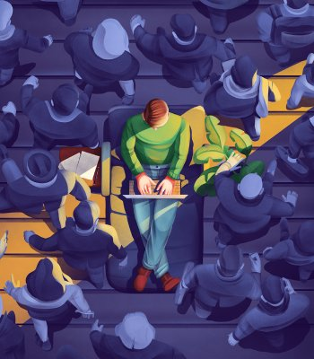

Biografia
A esta altura supongo que ya debes saber lo básico sobre mi, pero en esta sección voy a dejar que entres en profundidad y puedas conocer mis orígenes, bien comencemos. Nací el 1 de septiembre de 1999 en Villa España ciudad de Berazategui partido del Gran Buenos Aires, en este lugar viví y me crié hasta mis 19 años de edad, la verdad que no me puedo quejar de mi infancia, es más a las 9 años recibí mi primer equipo computador que según mi madre era para estudiar, pero creo que ni ella era consciente de todas las puertas a nuevos universos me había abierto.
Allí surgió mi pasión en primera instancia, como todo niño lo que primero fueron los videojuegos, los cuales eran difíciles de acceder ya que nadie sabía ejecutar ni siquiera un programa de instalación en mi casa, esto me hizo a aventurarme e intentar hacerlo solo, eso me llevó a un ciclo de prueba y error, los formateos se volvieron comunes y la investigación mi herramienta más crucial.
Con este pensamiento pude impulsar mis estudios bajo la metodología de la investigación y llegar a mis 19 años con mis objetivos cumplidos al día, buscando nuevos desafío gracias a un amigo conocí las carreras IT, las cuales eran compatibles con mi manera de ser y vivir, maravillado con la infinidad de conocimiento por adquirir y las soluciones que puedo dar con este mismo, buscando la innovación y el progreso es que me encuentro actualmente.
